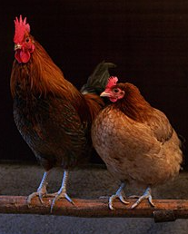

Chicken
Feathered friends so fine,
Scratching, pecking, clucking free,
Eggs laid in the hay.
I like H20
2*2 = 22
1/2 life is a game.
The chicken (Gallus gallus domesticus) is a domesticated junglefowl species, with attributes of wild species such as the grey and the Ceylon junglefowl[1] that are originally from Southeast Asia. Rooster or cock is a term for an adult male bird, and a younger male may be called a cockerel.
A male that has been castrated is a capon. An adult female bird is called a hen, and a sexually immature female is called a pullet. Humans keep chickens primarily as a source of food (consuming both their meat and eggs) and as pets. Traditionally they were also bred for cockfighting, which is still practiced in some places.
Terminology
An adult male is a called a cock or (in the United States) a rooster and an adult female is called a hen. Other terms are: Biddy: a newly hatched chicken Capon: a castrated or neutered male chicken Chick: a young chicken
Biology and habitat
Chickens are omnivores. In the wild, they often scratch at the soil to search for seeds, insects, and even animals as large as lizards, small snakes, or sometimes young mice.
Behavior
Social behaviour
Chickens are gregarious birds and live together in flocks. They have a communal approach to the incubation of eggs and raising of young.
Vocalizations
When a rooster finds food, he may call other chickens to eat first. He does this by clucking in a high pitch as well as picking up and dropping the food. This behaviour may also be observed in mother hens to call their chicks and encourage them to eat.
Breeds
- Bantam
- Silkie
- Polish
- Standard
- Easter Egger
- Rhode Island Red